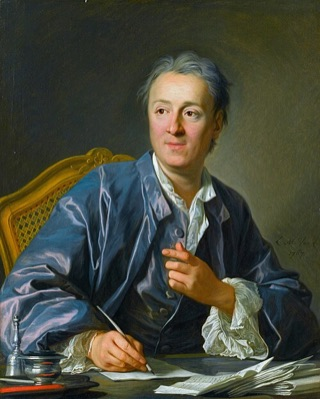
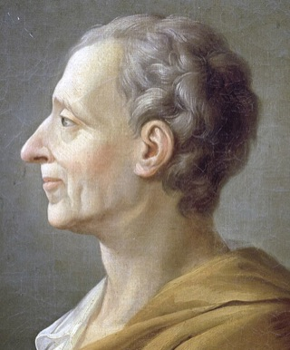
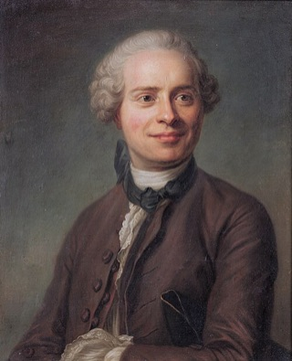
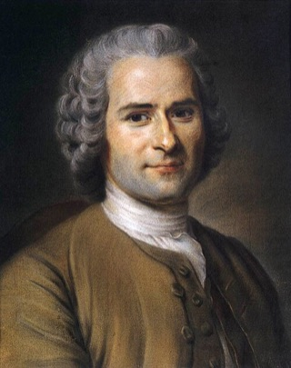
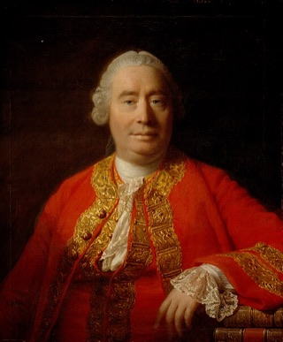
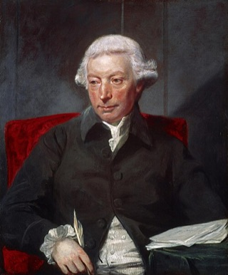
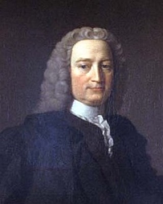
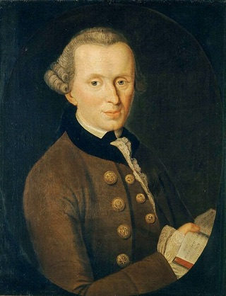
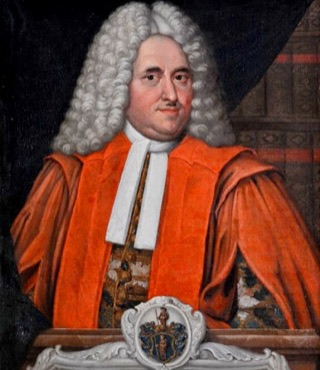
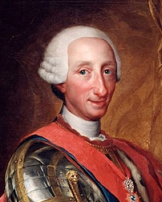

Voltaire
escritor, filósofo e polemista
Preso duas vezes na Bastilha, fez da sátira e da opinião pública armas contra o fanatismo e conseguiu a anulação da sentença que condenou Jean Calas.
Ler o texto sobre VoltaireAfinidades com o Iluminismo
Seis figuras de cada uma das cinco correntes do questionário: quem foram, o que defenderam e por que pertencem ao grupo.
França e redes europeias, sobretudo 1715–1789
Mudar leis e costumes expondo tudo ao exame público e ao debate.
Ler sobre o grupo Philosophes e Enciclopedistas
escritor, filósofo e polemista
Preso duas vezes na Bastilha, fez da sátira e da opinião pública armas contra o fanatismo e conseguiu a anulação da sentença que condenou Jean Calas.
Ler o texto sobre Voltaire
filósofo, escritor e editor da Encyclopédie
Preso em Vincennes por um livro materialista, dirigiu por mais de vinte anos a Encyclopédie, desafiando a censura para pôr o saber ao alcance de todos.
Ler o texto sobre Denis Diderot
magistrado e filósofo político
Magistrado em Bordéus, riu da França absolutista pelos olhos de dois persas e concluiu que só há liberdade quando o poder limita o poder.
Ler o texto sobre Montesquieu
matemático, filósofo e deputado revolucionário
Matemático que calculou os paradoxos do voto, defendeu cidadania para as mulheres e escreveu, escondido do Terror, sua aposta no progresso indefinido da humanidade.
Ler o texto sobre Condorcet
matemático e coeditor da Encyclopédie
Abandonado bebê na escadaria de uma igreja, tornou-se matemático de primeira linha e escreveu o Discurso preliminar, que submeteu todo o saber à razão.
Ler o texto sobre Jean le Rond d'Alembert
filósofo, escritor e compositor
Colaborador da Encyclopédie que rompeu com Diderot e Voltaire, acusou o progresso de corromper a humanidade e fez da vontade geral do povo a base da lei legítima.
Ler o texto sobre Jean-Jacques RousseauEscócia, aproximadamente 1730–1800
Confiar na experiência, nos hábitos e no ajuste gradual do que já funciona.
Ler sobre o grupo Iluminismo Escocês

filósofo, historiador e ensaísta
Sem diploma e barrado nas universidades por fama de ateu, mostrou que causalidade e moral repousam no hábito e no sentimento, e despertou Kant do “sono dogmático”.
Ler o texto sobre David Hume
filósofo moral e economista
Professor distraído de Glasgow, explicou a moral pela simpatia e a riqueza pela divisão do trabalho, mas desconfiava dos comerciantes tanto quanto dos governos que querem dirigir a economia.
Ler o texto sobre Adam Smith
filósofo e historiador
Ex-capelão de um regimento das Terras Altas, defendeu o progresso comercial e temeu que ele tornasse os cidadãos fracos e indiferentes à comunidade, como na Roma decadente.
Ler o texto sobre Adam Ferguson
filósofo moral
Filho de pastor do Ulster, defendeu que um senso moral inato nos faz aprovar a benevolência e formulou cedo a ideia da maior felicidade para o maior número.
Ler o texto sobre Francis Hutcheson
filósofo e pastor
Pastor que virou o crítico mais feroz de Hume, sustentou que percebemos o próprio mundo, e não ideias dele, e que todo raciocínio parte de princípios do senso comum.
Ler o texto sobre Thomas Reid
historiador, pastor e reitor da Universidade de Edimburgo
Pastor e reitor de Edimburgo por três décadas, liderou os moderados da Igreja escocesa e escreveu histórias que mostravam o comércio e as leis corroendo aos poucos o feudalismo.
Ler o texto sobre William RobertsonTerritórios germânicos, aproximadamente 1720–1800
Pensar por conta própria e agir por princípios que valeriam para qualquer pessoa.

filósofo
Nunca deixou de vez sua Königsberg natal. Ensinou que só conhecemos as coisas como nos aparecem e fez da autonomia e do dever o centro da moral.
Ler o texto sobre Immanuel Kant
dramaturgo, crítico e filósofo
Proibido pela censura de continuar sua polêmica religiosa, levou o debate para o palco e, com a parábola dos três anéis, fez de Natã, o sábio, um apelo à tolerância.
Ler o texto sobre Gotthold Ephraim Lessing
filósofo e matemático
Expulso da Prússia em 1723 sob ameaça de forca, voltou em triunfo com Frederico II e ensinou a Alemanha a filosofar na própria língua.
Ler o texto sobre Christian Wolff
filósofo
Filho de um copista pobre, entrou em Berlim pelo portão reservado a judeus e gado e virou o “Sócrates alemão”, defensor da razão e da liberdade de consciência.
Ler o texto sobre Moses Mendelssohn
jurista e filósofo
Escandalizou Leipzig ao anunciar um curso em alemão, fugiu para Halle e combateu os processos por bruxaria e a tortura, separando o direito da moral.
Ler o texto sobre Christian Thomasius
filósofo, teólogo e crítico literário
Aluno de Kant e amigo de Goethe, viu em cada língua um modo próprio de pensar e criticou o Iluminismo por dentro, sem abandonar a ideia de uma humanidade comum.
Ler o texto sobre Johann Gottfried HerderRedes europeias, do fim do século XVII à Revolução Francesa
Igualdade sem privilégios, decisão pela maioria e explicação natural do mundo.
Ler sobre o grupo Iluminismo Radical

filósofo
Expulso da sinagoga aos 23 anos, identificou Deus com a natureza e fez da liberdade de pensar a finalidade do Estado.
Ler o texto sobre Baruch Espinosa
filósofo e crítico
Protestante exilado em Roterdã, defendeu que uma sociedade de ateus poderia ser virtuosa e escondeu nas notas de seu dicionário as dúvidas que armaram o século XVIII.
Ler o texto sobre Pierre Bayle
filósofo e enciclopedista
Barão rico que recebia a Europa ilustrada à sua mesa, publicou anonimamente o ateísmo mais franco do século: só existe matéria em movimento, e a moral nasce da felicidade.
Ler o texto sobre Barão d'Holbach
panfletário e revolucionário
Ex-cobrador de impostos, convenceu os colonos americanos a romper com o rei, escapou por acaso da guilhotina em Paris e propôs uma renda paga a todos os cidadãos como direito.
Ler o texto sobre Thomas Paine
filósofo
Rico coletor de impostos, sustentou que todos nascem igualmente capazes e que só a educação e as leis fazem a diferença; seu livro foi queimado pelo carrasco.
Ler o texto sobre Claude-Adrien Helvétius
escritora e filósofa
Viveu o Terror em Paris depois de defender a Revolução contra Burke e de exigir para as mulheres a mesma educação e os mesmos direitos dos homens.
Ler o texto sobre Mary WollstonecraftEstados europeus, principalmente 1740–1790
Reforma decidida por quem sabe e executada de cima, sem esperar consenso.
Ler sobre o grupo Despotismo Esclarecido

rei da Prússia (1740–1786)
Obrigado pelo pai a assistir à execução do amigo, tornou-se o rei que se dizia primeiro servidor do Estado, hospedou Voltaire e fez da Prússia uma potência militar.
Ler o texto sobre Frederico II da Prússia
imperatriz da Rússia (1762–1796)
Princesa alemã que tomou o trono russo do marido, comprou a biblioteca de Diderot e se inspirou em Montesquieu para reformar as leis, mas endureceu a servidão.
Ler o texto sobre Catarina II da Rússia
imperador do Sacro Império e soberano dos Habsburgo
Filho de Maria Teresa, emitiu milhares de decretos em dez anos para tolerar protestantes e judeus, libertar servos e fechar mosteiros, e viu o império se rebelar.
Ler o texto sobre José II
secretário de Estado de D. José I (1750–1777)
Reconstruiu Lisboa depois do terremoto de 1755, expulsou os jesuítas e reformou o Brasil colonial, mas governou com tortura, censura e forca contra quem se opunha.
Ler o texto sobre Marquês de Pombal
rei da Espanha (1759–1788)
Rei de Nápoles antes de reinar na Espanha, patrocinou as escavações de Pompeia, expulsou os jesuítas e reformou um império inteiro por decreto, com ministros escolhidos a dedo.
Ler o texto sobre Carlos III da Espanha
grão-duque da Toscana (1765–1790) e imperador (1790–1792)
Como grão-duque da Toscana, fez do pequeno Estado o primeiro a abolir a pena de morte e a tortura, mas como imperador devolveu camponeses à servidão.
Ler o texto sobre Leopoldo II da ToscanaOs textos foram escritos para este site a partir dos verbetes da Wikipédia, sobretudo em inglês e em português. Cada cartão leva a um texto completo, que lista os verbetes consultados. O conteúdo da Wikipédia é distribuído sob a licença CC BY-SA 4.0.
Os retratos vêm do Wikimedia Commons, todos em domínio público ou sob CC0. Foram reduzidos para esta página e, quando indicado, recortados para mostrar o rosto.
_en_1718_-_P208_-_mus%C3%A9e_Carnavalet_-_5_(cropped).jpg){kind=link}


_-_Reverend_William_Robertson_(1721%E2%80%931793),_Historian_and_Principal_of_Edinburgh_University_-_PG_1393_-_National_Galleries_of_Scotland.jpg){kind=link}


.jpg){kind=link}
.jpg){kind=link}
.jpg){kind=link}


.jpg){kind=link}